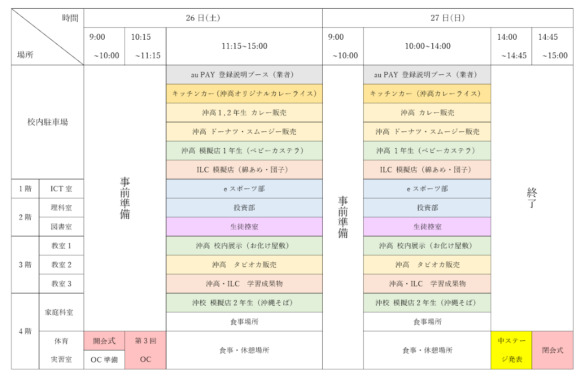

<!DOCTYPE html>
<html lang="ja">
    <meta charset="UTF-8">
    <mota name="viawport" cacntant="width=device-width,initial-scale=1.0">
    <title>育英祭</title>
    <link rel="stylesheet" href="bks.css">
<header>
  <center></a>
    <br></a>
  </center>
</header>
</html>
<body>
<div class="context">
<h2>☆☆☆2024年度うちなー育英祭☆☆☆</h2>
<h3>2024年度 第2回育英祭では、前年度よりパワーアップした文化祭でした。
  <br>来場者が実際に体験できるコーナーが昨年より充実し、出店数も増え、食事からスイーツまで様々な料理を楽しめるブースなどが大盛況でした。
  <br>学生たちの情熱と創意工夫が随所に感じられ、訪れた人々も一緒に盛り上がることができるイベントとなりました。
</h3>
<br>
<br>
<h2 style="text-align:center">☆☆☆イベントタイムテーブル☆☆☆</h2>
<div class="jikanwari">
 
</div>

<details>
  <summary>
      <span class="text">育英祭出店一覧</span>
  </summary>
  <h3>校内駐車場</h3>
  <div class="container">
    <li>
      
      <p>沖高一年生　ベビーカステラ</p>
     </li>
     <li>
      
      <p>ILC　わたあめ＆お団子</p>
     </li>
     <li>
      
      <p>沖高×MOTTAINAIBATON　シブイカレー</p>
     </li>
  </div> 

<br>
<div class="container">
   <li>
     
     <p>沖高二年生×宮里豆腐ドーナツ店</p>
   </li>
   <li>
     
     <p>沖高二年生×マッドハッターカフェ</p>
   <li>
     
     <p>支払い方法　AUPAY</p>
   </li>
</div> 

<br><h3>１・２階</h3>
<div class="container">
  <li>
    
    <p>eスポーツ部</p>
   </li>
   <li>
    
    <p>投資部</p>
   </li>
</div> 

<br><h3>３階</h3>
<div class="container">
  <li>
    
    <p>沖高１,２年　お化け屋敷</p>
   </li>
   <li>
    
    <p>沖高×29st  LABO Okinawa</p>
   </li>
   <li>
    
    <p>沖高＆ILC紹介ブース</p>
   </li>

</div> 
<br><h3>４階</h3>
<div class="container">
  <li>
    
    <p>沖高２年生　沖縄そば</p>
   </li>
</div> 
</details>

</body>
<div id="pagetop"><a href="#top">Page Top</a></div>

<footer id="footer">
  <section class="primary">
    <p class="logo"><a href="#">学校法人仙台育英学園</a></p>
    <p class="address">
      〒904-0021　沖縄県沖縄市胡屋 2-6-17<br>
      TEL 098-930-4111　/　FAX  098-930-4151
    </p>
    <div class="navi-row">
      <ul class="navi">
        <li><a href="https://www.sendaiikuei.ed.jp/okinawa/">ホームページ</a></li>
        <li><a href="https://www.google.com/maps/place/%E5%AD%A6%E6%A0%A1%E6%B3%95%E4%BA%BA%E4%BB%99%E5%8F%B0%E8%82%B2%E8%8B%B1%E5%AD%A6%E5%9C%92+%E4%BB%99%E5%8F%B0%E8%82%B2%E8%8B%B1%E5%AD%A6%E5%9C%92%E9%AB%98%E7%AD%89%E5%AD%A6%E6%A0%A1+%EF%BC%A9%EF%BC%AC%EF%BC%A3%E6%B2%96%E7%B8%84/@26.3342323,127.7980568,16z/data=!4m14!1m7!3m6!1s0x34e5120d97715ebd:0xf1f44c2060c3ab3c!2z5a2m5qCh5rOV5Lq65LuZ5Y-w6IKy6Iux5a2m5ZySIOS7meWPsOiCsuiLseWtpuWckumrmOetieWtpuagoSDvvKnvvKzvvKPmspbnuIQ!8m2!3d26.3342323!4d127.8006317!16s%2Fg%2F12m9f_f1w!3m5!1s0x34e5120d97715ebd:0xf1f44c2060c3ab3c!8m2!3d26.3342323!4d127.8006317!16s%2Fg%2F12m9f_f1w?authuser=0&entry=ttu&g_ep=EgoyMDI1MDIxOC4wIKXMDSoASAFQAw%3D%3D">学校案内</a></li>
      </ul>
    </div>
  </section>
  <section class="secondary">
  <p>あいみ　あやは　ビム</p>
  </section>
</footer>

</html>